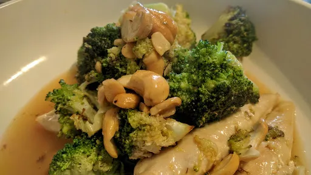

Broccoli lemon chicken

Servings: 2
Total: 25 mins
Ingredients
- 1 tbsp sunflower oil
- 340 g pack mini chicken breast fillets
- 2 cloves garlic, sliced
- 200 g pack Tenderstem brocolli, stems halved if very long
- 200 ml chicken stock
- 1 heaped tsp cornflour
- 1 tbsp clear honey
- grated zest ½ lemon
- juice of 1 lemon
- large handful roasted cashew nuts
Instructions
- Heat the
oil1 tbsp
in a large frying pan or wok. Add the chicken340 g pack
and fry for 3-4 minutes until golden. Remove from the pan to a plate and add the garlic2 cloves
and brocolli200 g pack
. Stir-fry for a minute or so, then cover and cook for 2 minutes more, until tender.
- Mix the
stock200 ml
, cornflour1 heaped tsp
and honey1 tbsp
well, then pour into the pan and stir until thickened. Tip the chicken340 g pack
back into the pan and let it heat through, then add the lemon zest and juice and the cashew nutslarge handful
. Stir, then serve straight away.
-
kcal
372
-
fat
13 g
-
saturates
2 g
-
carbs
15 g
-
sugar
6 g
-
fibre
3 g
-
protein
48 g
-
salt
0.69 g
BBC Good Food: One-pot Dishes
Short Link
Long Link